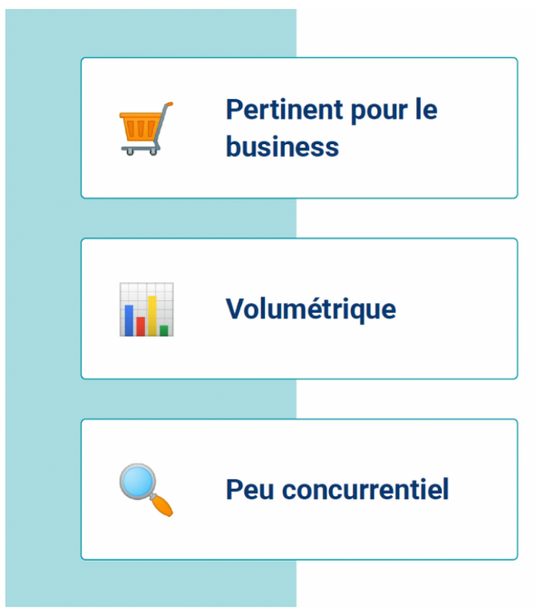

22 - Référencement (SEO)#
Syllabus
Module 22: Connaître les principes et les règles du référencement naturel et les maîtriser
Objectif global:
L’objectif global est que l’apprenant sache comment mettre en place une stratégie de référencement naturel
Plan de cours:
I. Intégrer le SEO dans la stratégie marketing de son projet
Analyser le fonctionnement de Google
Construire une roadmap
II. Choisir les bons mots ou expressions-clés
Reconnaître les différents types de mots-clés
Effectuer les premières recherches de mots-clés
Localiser ses mots-clés
III. Optimiser son site web
Installer les bons outils
Réaliser un audit de son site
Optimiser le contenu de ses pages
IV. Accélérer la remonter dans les résultats grâce aux backlinks
Augmenter l’autorité de son site
Trouver ses premiers backlinks
V. Mesurer l’impact de ses actions SEO
Analyser ses KPIs grâce à Google Analytics
Suivre sa progression grâce à la Google Search Console
Livrables:
Mettre en place une stratégie SEO spécifique
Réaliser un rapport SEO sur son site
Support de Cours
A venir
A inclure#
Note
Un outil pour checker la rapidité de chargement des pages web
Note
Outil pour checker la pertinence des mots clés
Introduction#
Intégrer le SEO dans la stratégie marketing de son projet#
SEO ?#
Search Engine Optimization
Ensemble des techniques mises en oeuvre pour améliorer la position d’un site web sur les pages de résultats des moteurs de recherche de manière “naturelle”.
Robot, crawler, spider ou agent#
Au départ de toute indexation se trouve un logiciel appelé robot, spider, agent ou crawler. Celui de Google s’appelle Googlebot, celui de Bing, Bingbot, celui de Yahoo ! Slurp, etc. Ces robots ne savent faire que deux choses :
Suivre (cliquer sur) des liens pour naviguer de page en page ou en appelant le sitemaps
Vérifier le robots.txt voir si l’url peut être crawlé et indexés
Récupérer le code HTML des pages ainsi identifiées
Mettre la/les pages dans sa base de données pour être
Note
intégrer image process-1
Algorithme#
Un algorithme est une suite finie et non ambiguë d'instructions et d’opérations permettant de résoudre une classe de problèmes
Méthode générale pour résoudre un type de problèmes
Recherche de solutions à des problèmes complexes
Examples des différents algorithmes de Google
Une formule qui juge de la valeur d’une page en analysant la quantité et qualité des autres pages qui font un lien vers elle, on parle d’autorité
Repère les sites qui abusent de requêtes similaires
Détecte les contenus trop semblables. (plagiat)
Lutte activement contre la duplication de contenu
Pénalise les sites qui abusent du plagiat et les contenus de mauvaises qualité
Analyse la qualité du contenu
Identifie exactement l’intention qui se cache derrière un mot-clé
Décrypte l’intention des utilisateurs grâce à la sémantique !
Extrapole
Hummingbird interprète donc chaque requête en l’adaptant à un contexte donné. Avant Google Hummingbird : le sens des requêtes Reconversion professionnelle ≠ Changer de vie professionnelle. Aujourd’hui, Google considère que l’intention est la même. 1 page pour 2 mots-clés !!!
Système de classement plus intelligent (2015). Aide à comprendre le lien entre les mots et les concepts.
BERT (2019 - Bidirectional Encoder Representations from Transformers) est un système d’IA utilisé par Google. Permet de comprendre comment les combinaisons de mots expriment des significations et des intentions différentes.
MUM est capable à la fois de comprendre et de générer du langage. Vous aider lorsqu’il n’y a pas de réponse simple
Lancé le 24 avril 2012, le filtre Google Pingouin s’attaque aux sites ayant recours à des techniques de référencement « frauduleuses » en matière de netlinking ou d’optimisations. Ces techniques sanctionnées ont toutes pour objectif de manipuler les résultats en faveur du site les utilisant.
Les systèmes de Google prennent en compte différents facteurs pour classer les contenus de qualité,
Après avoir détecté des contenus pertinents, les systèmes automatisés de Google vont prioriser ceux qui semblent les plus utiles,
Pour finaliser son évaluation des contenus, Google va alors définir un ensemble de facteurs permettant de déterminer le niveau d’expérience, d’expertise, de légitimité et de fiabilité (score E-E-A-T) des différents contenus.
Google va apporter plus d’importance à un contenu ayant un score élevé E-E-A-T surtout « lorsque le thème abordé peut avoir un impact significatif sur la santé, la stabilité financière ou la sécurité des personnes, voire sur le bien-être de la société dans son ensemble. »
Note
A creuser
YMYL veut dire Your Money, Your Life. Dans l’univers du SEO, on parle de pages YMYL. Une page est considérée comme telle lorsqu’elle propose un contenu qui a un impact direct sur la vie de l’internaute. Selon les propres termes de Google, “Certains types de pages peuvent impacter potentiellement le bonheur, la santé, la stabilité financière ou la sécurité future des utilisateurs”.
Note
Trouver un example de page
SERP#
Search Engine Result Page
La SERP correspond à la page web qui s’affiche lorsqu’un internaute effectue une recherche sur un moteur de recherche (Google, Bing, Yahoo).
La SERP peut se composer de différents éléments :
Google Ads
Position 0
Knowledge graph
Pack local
People also ask
Résultats organiques
Recherche universelles (images, vidéos,actualités, etc.)
Recherches associées
Etc.
Note
format grille Insérer un example de pages avec les différentes infos mentionnées
Composition de la SERP#
SEA vs SEO
Note
créer une grille avec les deux images
Les bases du Web#
Nom de domaine & URLs#
Lorsque nous cliquons sur une adresse depuis les résultats de recherche, nous demandons l’accès à une URL, qui en soit n’est rien d’autre qu’un lien. Et comme le web est gigantesque, on utilise un nom de domaine qui en réalité indique l’emplacement du site, ce qui nous évite d’avoir à taper une suite de chiffre pour accéder à ce même site (lien avec adresse localhost ? - serveur)
Ainsi quand nous cliquons sur un lien dans les résultats de recherche depuis Google, nous sommes amené sur le serveur du nom de domaine.
Ensuite la catégorie et le slug (image ci-contre n°5-6) permettra d’identifier le contenu demandé. C’est pourquoi il est important de veiller à avoir une structure d’urls indicative aussi bien pour les robots que pour les humains; cela aura aussi un impact sur ce que l’on nomme l’arborescence.
{kind=link}
En Pratique#
Robots.txt#
Un fichier robots.txt permet de gérer les activités des robots d’exploration du web afin qu’ils ne surchargent pas votre site web ou n’indiquent pas des pages qui ne sont pas destinées à être vues par le public.
En effet, les robots peuvent avoir accès à des fichiers de codes qu’ils ne sont pas spécialement censé crawler, exemple les fichiers .php ou d’autre section du site comme les commentaires.
Sitemap.xml#
Un fichier sitemap.xml permet de donner une sorte de carte de toutes les pages existantes sur le site des robots d’exploration et d’informer les moteurs de recherche des adresses d’un site web disponibles pour l’indexation automatique.
En générale l’ensemble des CMS moderne le procurent de manière automatique et feront une mis à jour à chaque fois qu’une page et créée.
Pour trouver un sitemap il suffit de rajouter “/sitemap.xml” après l’url de la homepage
Les 3 Pilliers du SEO#
Note
Flashcard ?
Choisir les bons mots ou expressions-clés#
Qu’est-ce qu’un mot-clé#
Il s’agit des expressions que les internautes utilisent dans les moteurs de recherche.
En SEO, on cherche à répondre à une demande d’un internaute. -> Il faut identifier ce que recherchent les internautes sur la thématique qui concerne le site.
Qu’est-ce qu’un BON mot-clé#
Un bon mot-clé doit répondre à la requête tapée par les internautes. Mais, il doit également être utile d’un point de vue business !
Note
Faire une grille à la place
Les types de mots-clés#
permettant de faire la Recherche
Note
format grid
Les mots clés génériques
Composés d’un seul mot
Bénéficient d’un volume de recherche très élevé
Hyper concurrentiels
Par exemple : « Voiture » ou « Veste »
Les mots-clés de moyenne traîne
Composés de deux à 3 mots maximum
Bénéficient d’un bon volume de recherche élevé
Moins difficile que les mots-clés génériques
Par exemple : « Voiture pas cher » ou « Veste femme daim » ou « Voiture électrique »
Les mots-clés de longue traîne
Apportent un trafic très qualifié car la requête est ultra précise.
Correspondent à une intention claire et font généralement partie de votre cible.
Le trafic est donc plus faible mais la conversion plus élevée.
Analyse sémantique#
Recherche de mots-clés pertinents
Il s’agit de l’étude des mots-clés et intentions de recherche des internautes. ➡ Trouver, grâce à des outils, les mots-clés les plus pertinents pour son site et sa cible.
Quelle intention se cache derrière le mot-clé ?
Note
créer des flash-cartes
Activité ?#
Note
Page 31-32 - checker comment on le met en place - on l’emmene
Les Outils#
Keyword surfer#
Extension Chrome - lien
Note
Leur demander de l’installer et activer
Answer the public#
Answer the public n’est pas un outils de calcul des mots-clés ! Ses recommandations sont un point de départ pour votre recherche
Ahref#
SEMrush#
Activité#
Trouver les mots clés#
Note
10 min - mettre en place un lien vers chronomètre
consigne: trouver plusieurs mots clés en lien avec votre projet
Trier les mots clés#
Warning
Créer un fichier excel et le mettre dans le drive de chacun des apprenants
Créer des cocons sémantiques#
Note
Insérer image
Planning éditorial#
Outil permettant d'établir à l'avance les sujets à traiter
Il s’agit d’un outil de pilotage qui sert à planifier et anticiper les contenus web à produire pour une période donnée. Optimiser les sujets à traiter sur une période donnéeaz
Optimisation du site#
Rédaction de contenus#
Objectif: Identifier, rédiger et publier du contenu optimisé sur les thématiques séléctionnées.
Rythme: Pour gagner en notoriété aux yeux de Google, il faut produire régulièrement du contenu.
Les deux grands axes du pilier contenu sont:
l’identification des contenus
la rédaction des contenus
Localisation des mots clés#
Insérer au moins 10 fois le mot clé principal : notamment dans la meta description, le title, l’Url, le H1, l’intro et le corps du texte.
Note
Insérer image
Optimisation des pages#
Title#
Titre de l'article, visible dans les résultats de recherche
title
Longueur: 65 caractères max
Mot-clés en début de phrase
Dynamique et catchy, en lien avec la requette
Utiliser un verbe à l’infinitifpour les requêtes transactionnelles. Ex: choisir un vélo
Unique: un même title ne peut pas être utilisé pour 2 pages
Balises Hn#
Respecter la structure des balises dédié au texte Hn
Chaque page n’a qu’une seule balise
titleChaque page n’a qu’un seul H1
Il faut respecter une structure logique: les H2, H3 et H4
Example de structure:
H1: Titre de l’articlevisible sur le site
H2: titre des parties
H3: titre des sous parties
Meta description#
Petite description de l'article visible dans les résultats de recherche
longueur: 150 caractères max
y placer le mot-clé
S’adapter à la recherche
Décrire la plus-value de votre page et l’adapter à la requête.
Il faut donner envie à l’internaute d’accéder à ce contenu là plutôt qu’un autre : Utiliser des termes comme “Découvrez”, “Nouveau”, “Incroyable”.
Fraicheur de la page#
En cas de mise a jour d’une page, il faut penser à actualiser la date pour augmenter la confiance des internautes envers vos résultats.
Warning
Automatique dans la plupart des CMS
Images#
Google affiche régulièrement un bloc images qui peut vous apporter du trafic et du business intéréssant.
Comment indexer les images ?
Comme pour les pages
Optimiser le nom de l’image, toujours sans accent et en séparant les mots par des traits d’unions.
Renseigner l’attribut
altde l’image qui permettra à Google d’en comprendre le contenu. La balise doit décrire l’image.
example
Extension et poids de l’image#
Aujourd’hui il est important d’avoir un site responsive avec un temps de chargement optimal pour ne pas décevoir l’internaute lors d’une expérience navigationnelle ou d’achat.
Afin de pallier à ce problème, on utilise le format d’image dit webp beaucoup moins lourd que la moyenne des formats comme jpg ou png. En effet ce format est apprécié des moteurs de recherche
pour sa compression.
Outils de conversion de format
Outil de réduction de poids de l’image
Note
Ps : Attention à la compression dans certains cas cela peut détériorer l’image ! Prendre le temps de comparer l’avant-après !
Url des pages#
L’Url doit respecter la structure interne de votre site internet et contenir le mot clé principal de la page.
Warning
Attention : il faut éviter les accents, les majuscules et les caractères spéciaux et on utilise le trait d’union (-) et non l’underscore (_).
Les règles d’or de la rédaction SEO#
Note
Checker slides 51-52
Maillage interne#
Le maillage interne fait référence à l’organisation des liens au sein d’un site web. Un lien interne est un lien qui relie deux pages d’un même site web.
Inclure un example
Warning
⚠ À ne pas confondre avec les backlinks qui sont des liens provenant de sites externes.
L’importance accordée au maillage interne se justifie par les 3 grandes raisons suivantes :
Distribution du jus sémantique (= la notoriété) : cela permet de hiérarchiser les pages entre elles
Amélioration de l’expérience utilisateur : ce qui a un impact sur des critères phares de l’algorithme de Google (nb de pages vues, temps passé sur le site, etc.)
Visite plus régulière des pages par Google : cela permet à Google d’explorer (= découvrir) plus facilement vos nouvelles pages et de revisiter plus régulièrement les anciennes
Warning
⚠ Ne pas respecter le maillage interne comporte le risque d’avoir des pages orphelines (= sans lien entrant).
Voici les 3 grands points à respecter dans le cadre du maillage interne :
1- Hiérarchiser les pages entre elles pour savoir celles qui ont vocation à être particulièrement mises en avant
2- Respecter les règles d’ordre et de nombre de liens par page
Nombre minimum : au moins 3 liens
Nombre maximum : pas plus de 10 liens
Ordre : plus le lien est placé au début de l’article et plus il est considéré comme important. Pour autant, il faut dispatcher les liens tout au long de l’article.
3- Respecter les consignes relatives aux ancres
Les ancres doivent être optimisées, c’est-à-dire qu’elles doivent correspondre au mot clé principal de la page vers laquelle on fait le lien. Exemple : pour faire un lien vers cette page : https://www.materiel-velo.com/infos/le-top-des-velos-de-course-2020
non optimisée - pour en savoir plus sur le vélo de course, cliquez ici
légèrement optimisée - tout savoir sur le vélo de course
optimisée - tout savoir sur le vélo de course
Les ancres de lien#
Quand on fait un lien en html, ça donne ça:
<a href="https://www.test.fr">Toto</a>
Toto représente l’ancre de lien. Dans le cadre d’un site c’est important car les liens qui pointent vers une page sont censé la décrire, cependant Attention à ne pas les sur-optimiser à chaque fois ! Voici les différents types d’ancres :
Ancre exact (elle cible un mots-clés précis) : Achat vin en ligne, caviste en ligne….
Ancre partielle (elle cible un mots-clés à ajoutant un contexte sémantique ne la rendant pas exact) : Maison Dubecq votre caviste, Maison Dubecq caviste en ligne Marque : Maison Dubecq
Générique : Cliquez ici, panier, catalogue
Url ou ancre nue : https://www.dubecq.com/fr/
Ancre image
Hélas il n’y a pas de pourcentage de répartition d’ancre idéal, l’important est de sélectionner l’ancre qui sera la plus descriptive pour l’internaute et les robots.
Identification des mots clés#
Cocon SEO#
Classification sémantique permettant d'optimiser le maillage interne
Le cocon sémantique permet d’optimiser l’architecture et le maillage interne d’un site web par classification sémantique des contenus en pages mères, speurs et filles
-> Organiser les contenus d’un site de manière hiérarchique en utilisant la proximité sémantique
Un cocon sémantique (ou topic cluster) correspond à l’ensemble des contenus gravitant autour d’une page pilier, créés pour la mettre en avant, lui donner plus de poids et surtout pour aider les moteurs de recherche et les internautes à approfondir ce qui a pu être expliqué ou évoqué dans la page pilier. Ce sont ces contenus satellites que l’on appelle aussi parfois cluster content.

Cocon sémantique#
Comment ça marche ?

Cocon sémantique, un example#

Cocon sémantique en vrai#
Note
Inclure template Miro
écrire consigne
Comment Google visite mon site ?#
Une fois le texte optimisé il reste une balise très importante afin de laisser Google Accéder à cette page, cette balise est située dans la partie
<head>de la page.Cette balise c’est la
qui indique aux différents robots si la page doit être
indexée ou non, et si les liens doivent être suivi ou non.
La page sera indexée et les liens suivis (instruction par défaut)
La page ne sera pas indexée mais les liens seront pris en compte
Comment utiliser les balises meta pour empêcher l’indexation d’une page web ?
En-tête HTTP (Ma page est-elle accessible ?)
Quand un robot souhaite consulter une page ou un humain depuis les résultats de recherche, le server renvoie une réponse, il existe beaucoup de réponse différente mais voici les plus récurrentes :
La requête HTTP fait au serveur aboutit, tout est normal. La page en question pourra être crawlée (si pas de blocage par robots.txt) par les bots Google et autres moteurs de recherche.
La page demandée a été déplacée et redirigée vers une autre URL de manière permanente. Très utile en SEO, la redirection permanente permet de gérer les cas de migration de site de tout type (changement de domaine, migration http vers https, refonte, etc) mais surtout de modifier l’URL d’une page sans perdre le trafic entrant.
La page demandée a été déplacée et redirigée vers une autre URL de manière temporaire très utile pour un e-commerce qui est en rupture de stock et qui préfère rediriger vers une catégorie produit le temps de s’approvisionner. Cela évite de “supprimer” la page ou de la rendre accessible au robots qui pourrait la désindexer.
Le serveur n’a trouvé aucune page pour l’URL demandée, ce qui signifie que la page n’existe pas. Cela peut-être temporaire ou définitif, généralement la page est accessible via un lien non-fonctionnel ou par un internaute tapant la mauvaise URL. Dans ce cas il est préférable de rediriger la page avec une 301.
Le problème vient du server, le site est inaccessible pour quiconque depuis les moteurs de recherche. Dans ce cas précis, on contact l’agence ou l’hébergeur rapidement pour identifier la cause.